-01-
终于，有人再一次刷新了人类的道德底线。
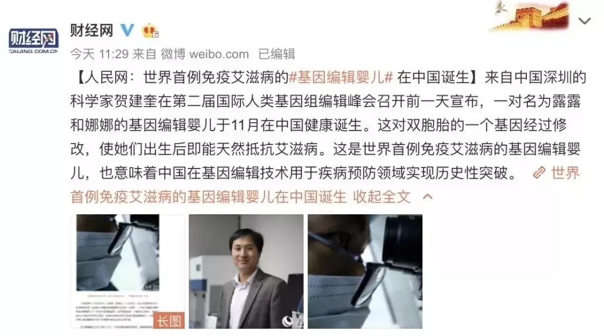
这一次是一位中国科学家，在他手上诞生了世界上首例基因编辑婴儿。
既然是世界第一，本应该被各种表扬，却遭致122名中国科学家的联名谴责以及许多海外科学家的指责。
原来，所谓的基因编辑婴儿并不是什么充满创新的黑科技，而是一次突破医学伦理底线的“创举”。
基因编辑就像电影剪辑一样，通过技术手段对基因进行修改，或者引入一段基因，或者消除一段基因，以达到防止病患、改善机能的作用。
这项技术早已经成熟，之所以别人不敢急冲冲地进行人体实验，是因为你一旦对基因进行了修改，就会破坏整个基因组，会有不可估量的后果。
也就是说，你可以将感染艾滋病的基因消除，但可能会造成整个免疫系统的崩溃。
正因为这样，在美国和许多其他国家，对人体进行基因编辑是违法的！
而贺建奎都等不及动物实验的成功，在存在巨大未知风险情况下，竟直接将其应用在人体上。
说的直白一些，就是拿人做实验，那两个宝宝将可能会像小白鼠一样遭受难以想象的痛苦。
可那是人，那是活生生的人啊！
难道学识渊博的科学家不知道人人生而平等，不知道每个人都有着上帝赐予的不可剥夺的生命尊严和权力么？
正是这位科学家无信仰、无底线，没有对生命的敬畏和尊重，终于让祖国当了回“天下第一”。
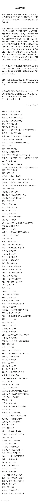
-02-
贺建奎的行为震碎了全世界人们的三观，他也会面临应有的处罚。
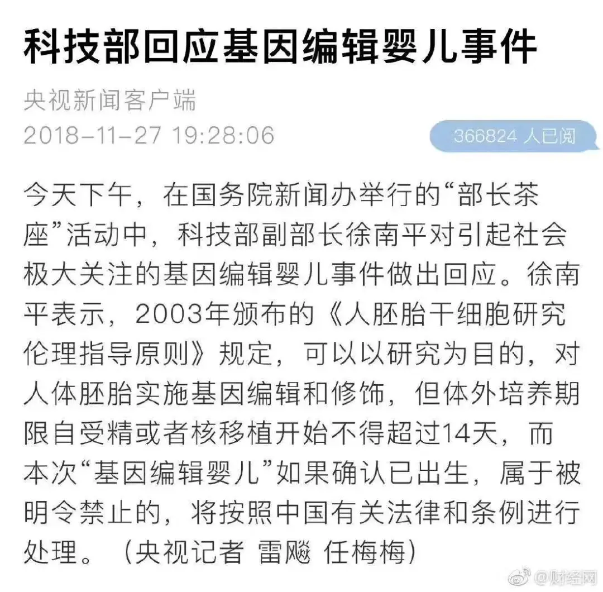
可如果将来基因技术走向成熟，那你会改变自己孩子的基因么。
想象一下，如果通过基因改良，你的孩子将会拥有大长腿，将会拥有精致的五官，将会拥有爱因斯坦的智商，将会拥有不会感冒、不会得癌症的身体。
你会改变基因么？
想到人们对于漫威英雄的喜欢，就知道人们一定扛不住那样的诱惑。
无数人幻想着自己基因突变成为身手敏捷的蜘蛛侠、拥有无限自愈能力的死侍、有着惊人智力和超能力的美国队长......
△很多漫威英雄都是来自基因变异
人们的心中对技术有一种狂热的信念，坚信科技将会让人变得更完美、更有力量、更有魅力，甚至让人成为无所不能的“上帝”。
这样不是很美好么？
有一部非常经典的科幻片《千钧一发》就为我们描绘一个基因控制的未来世界。
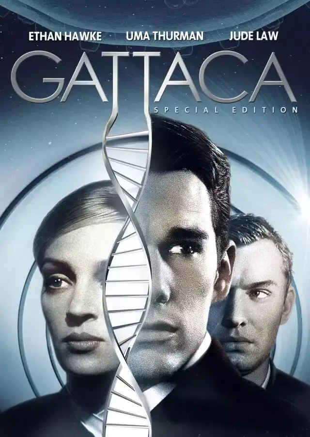
在未来，人们可以通过基因改良变得更聪明、更健康，所以很多富人都争先恐后地对自己的孩子进行了基因改良。
而穷人因为没钱改良所以备受歧视，他们因此找不到好的工作，因为基因改良的人才是一个正常的人，而自然出生的人都被看为是“病人”。
文森特的父母是非常虔诚的基督徒，他们因为坚信上帝赐予的是最好的，所以并没有对文森特进行基因改造。
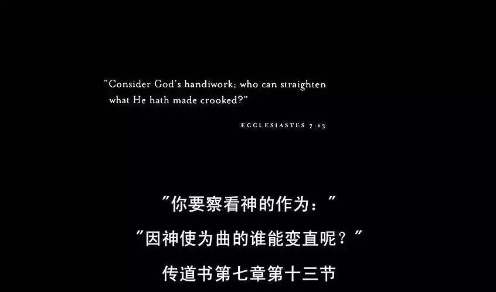
可是，当文森特生下来后，他的身体状况让父母非常担忧：
神经性疾病可能性60%
狂躁症可能性42%
注意力无法集中可能性89%
心脏病概率99%
有过早死亡可能性，预期寿命：30.2年
这些冰冷的数字让父母绝望，也击碎了他们的信仰，第二胎他们选择了基因改造。
果然，文森特的弟弟又健康、又聪明，文森特在“勇气比赛”中从来都比不过弟弟，而且差距越来越大。
就这样，瘦弱的文森特和强健的弟弟同时生活在这个家庭里，父母也将所有的心思和关怀放在了弟弟身上。
不仅得不到父母全心全意的爱，文森特也备受弟弟和其他人的歧视。
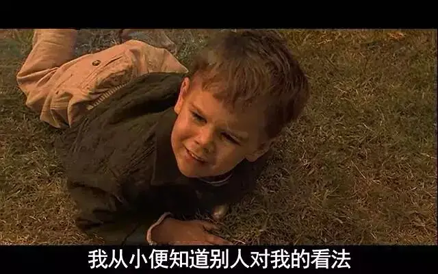
成年后，文森特因为没有良好的基因，更是无法得到好的工作，只能成为一个清洁工。
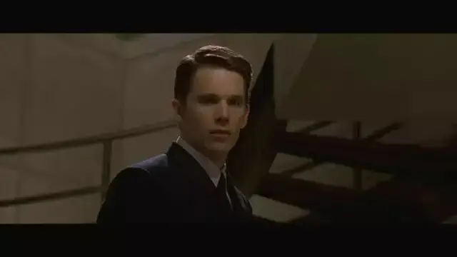
可是文森特拥有一个伟大的梦想，那就是成为一名宇航员，他决定拼劲全力来追逐自己的梦想。
可是不论他多么努力，文森特身体里无法改变的基因注定他没有办法实现自己的梦想，航空公司只要最优秀的基因改良人。
走投无路，文森特设法找到了一个专门伪造基因身份的代理人，在他的帮助下，他认识了杰洛米，一个拥有优秀基因的男人，却因为意外事故瘫痪而决定出卖自己的身份。
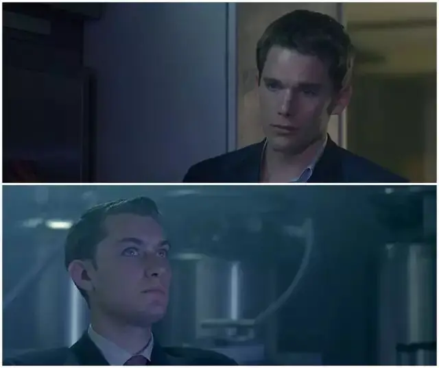
于是，文森特练习他的签名，配隐形眼镜，甚至为了匹配杰洛米的身高，还做了个断骨增高手术。
接着他们一起合作伪造了工作所需的基因资料：血液、尿液、死皮、毛发....
就这样文森特蒙混过关进入了航空公司，接着每一天他都小心翼翼地将自己的“痕迹”抹去。
不论是在家里还是在工作场所，他将自己的指纹擦拭干净，然后将自己的毛发带走焚烧，最后再把杰洛米的基因资料看似无意地放在工作场所，以应对严格的基因检查。
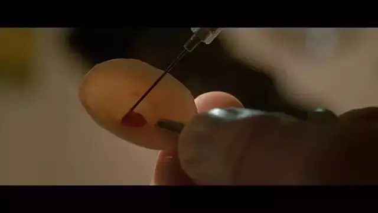
文森特和杰洛米也逐渐成为了好朋友，文森特的工作表现引人注目，就连杰洛米都对他刮目相看。
眼看着梦想一步一步走近，文森特充满感激地向杰洛米表示感谢，而杰罗米却告诉他：
你不用谢我，我收获的更多，我只是把身份借你而已，而你却让我分享了你的梦想！
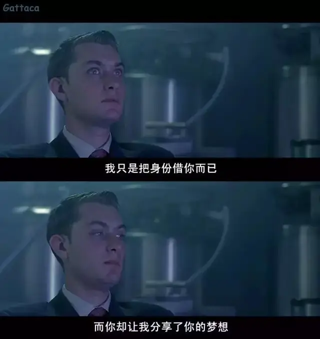
在这部感人至深的作品中，未来世界里人们变得的确更加优秀、更加聪明，但却更加冷漠无情，整个社会变成了赤裸裸的丛林世界，充满了互相的隔阂和歧视。
杰洛米之所以出意外瘫痪，其实是自杀未遂，而缘由竟是自己在一场游泳比赛中没有获得冠军。
完美是对人的祝福，某种程度上又变成了对人的咒诅。
科技可以极大地解放人们的想象力和行动力，但同时也可能成为掘墓人。
所谓人们心中比较满意的完美，就是比身边的人更完美一些。
每个人都要做冠军，因为攀比，人们的欲望永无止境，对科技的诉求也永不停步，最终甚至会舍本逐末、迷失自己。
人类逐渐变成“非人”，在未来世界中，科技反倒不是什么稀缺的东西，有血有肉、充满瑕疵的人性、情感、梦想反倒成为了最珍贵的东西。
因此，怀抱梦想勇往直前的文森特不仅感动了杰洛米，也最后用他不完美的基因征服了自己的弟弟，因为文森特拥有上帝赐给人类不需任何人为篡改的灵魂。
而电影的结尾处也非常感人，医生在发现了文森特的破绽后，暗中提醒他“右撇子的人尿尿不用左手扶”。
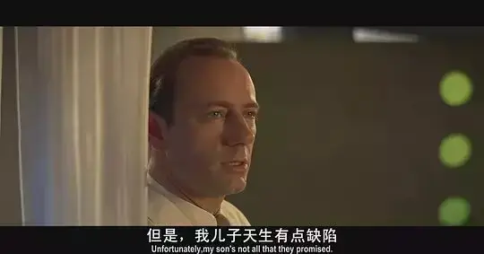
原来，当文森特第一次入职体检时，这位医生就已经识破，可他从头到尾都保持沉默，暗中守护着文森特的梦想。
这样的人性之光在冰冷可怕的未来世界中分外亮眼。
-03-
这是一部非常典型的西方科幻电影，如果你喜欢看科幻片，你就会发现西方人对未来世界充满着悲观和绝望。
除了本片，《猩球崛起》中，猩猩凯撒是基于人类基因工程而诞生的，凯撒的智力水平极高，却遭致人类的嫉妒，最终凯撒被送进了猩猩看护所而受尽百般虐待，于是凯撒领导其他被囚的猩猩与人类展开了战争。
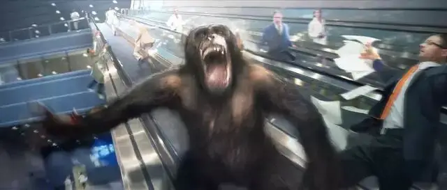
《第九区》中，地球变成外星人的避难场所后，男主由于一起实地探访不小心染上了外星人特殊体液从而改变基因成为外星人。
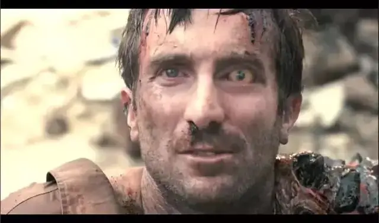
《生化危机》中，保护伞公司研发的T病毒在亿万人群中只能与女主的基因完美融合，并迸发出超能力，其他的人除了想办法苟且活着继续斗争，不然就等着变丧尸，变有意识的怪物。
《僵尸世界大战》也是异曲同工，超级丧尸病毒攻击了人类基因，导致死人成为快速奔跑的绝地丧尸，给世界带来了灭顶之灾。
关于基因变异的灾难电影还有很多，数不胜数：《变种DNA》、《撕裂人》、《致命弯道》、《异种》、《汉江怪物》、《釜山行》.....
这些作品描绘的未来总是笼罩在近乎末日般的灰色里。
很多灾难并不是因为科技本身，而是因为有人别有用心，有人要用科技去解决自己看不顺眼的人。
每个人都有自己的想法，每个人都有自己设想的理想世界，彼此之间谁都不服谁。
而每个人都拥有极强大的技术，于是，人间变成了地狱，未来变成了末日，机器人和异种比真正的人类更有人性。
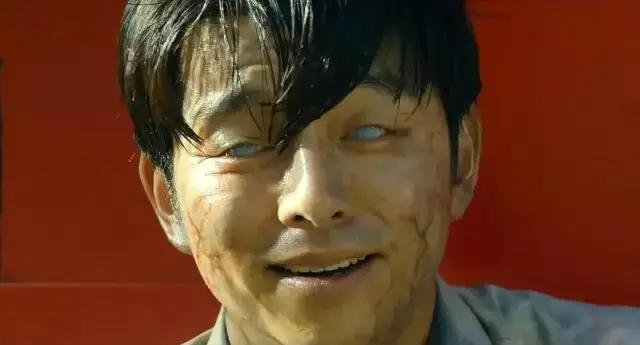
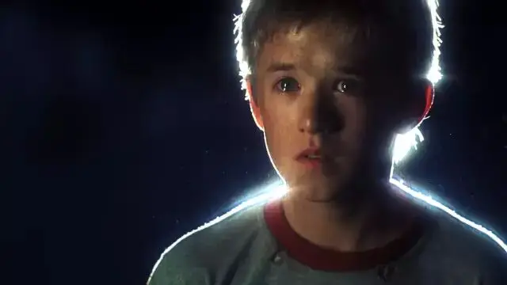
西方世界之所以对未来描绘的如此灰暗，除了对技术有未知的恐惧，更大的原因是基于基督教文化的原罪观和末日论。
原罪观让他们明白人人都是充满着争竞、自私、怒气的罪人，所以科技永远只能是工具，这个工具的能力越大，人类毁灭别人和自己的能力就越大。
而末日论让他们明白世界有始有终，如果将来有一天，人类狂妄到要自己做上帝的时候，那就是人类最堕落的时候，也是末日来临的时刻。
这种末日往往不同于《圣经》中耶稣再来有着救赎盼望的末日，科幻片里的末日是一种自我毁灭的绝望，在那样的世界里，就是一个充满灵气的眼神、一个充满情感的微笑都是极其稀有的东西。
电影《人类之子》中，导演干脆懒得交代背景，或者因为基于变异，或者因为环境污染，或者因为核辐射，反正人类丧失了正常生育的能力。
于是，一个怀有身孕的非洲女人成为了全世界的希望和要守护的对象。
这很荒谬么？
今天看到有人敢拿人做实验，就知道这种悲观和警惕是必要的。
人总以为自己是上帝，却不知道自己狂妄到一种地步，会变成连自己都不认识的撒旦。
今年烧脑巨作《湮没》中，一个神奇的区域中，某种物质能够改变里面所有东西的基因，人们往往有去无回，进去的探险者要么被基因突变的怪兽吃掉，要么自己基因突变最后变成一株没有生命的绿植。
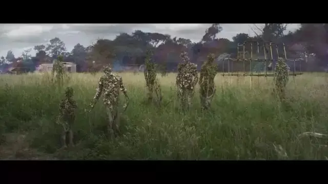
当主角抵达区域核心时，她被那个闪耀着奇艺光彩的“神秘之物”吸引，可是当她盯着它入迷的时候，“神秘物”吸取了她的一个细胞，接着细胞不断裂变，直至出现另外一个和她一模一样的人。

最后，这个基因克隆人完全取代了主角，虽然容貌一模一样，可是你再也不是你自己了！
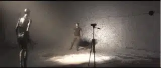
这是何等的恐怖。
我们不是反智，也不是反科学，而是提醒一些人，科学看上去很迷人，但是如果你对它狂热到失去知觉和人性的时候，你会被它吞噬。
科学的灵魂从来都不是欲望和金钱，也不是创新和想象力，而是信仰！
这份信仰是一种对于世界存在完美秩序的笃定，一种寻找真相、认识真理的渴望，一种造福世界、祝福别人的爱心。
这才是中国科学的明天。
推荐阅读
▼
（点击图片即可获取全文）
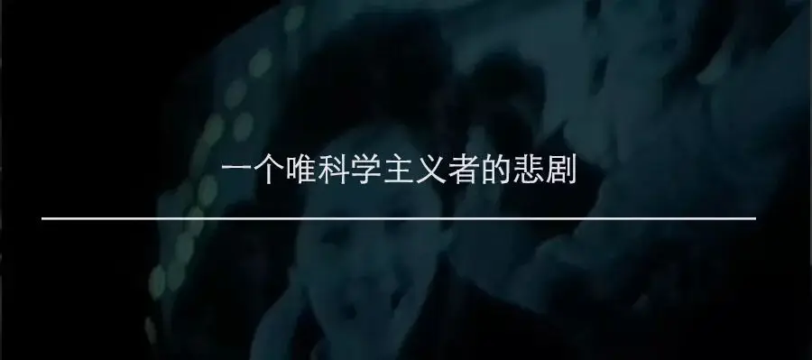
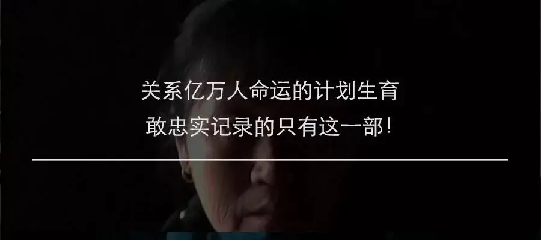

这里没有挑逗你眼目情欲的小鲜肉
也没有挑动你肉体情欲的段子
更没有膨胀你今生骄傲的鸡血
我们只在乎那些最质朴真诚的作品
在那里我们才能恢复真正的想象力
我们也坚信这才是我们真正需要的

ID:Six_hundred_hits
长按二维码，一键关注
【六百击】
-END-
电影评论
尽情分享朋友圈

苹果打赏通道
小提示：文末广告是腾讯配送广告，内容与本号无关，但您的每次点击（无需反复点）都会给平台带来几毛收益，欢迎您点击支持六百击。